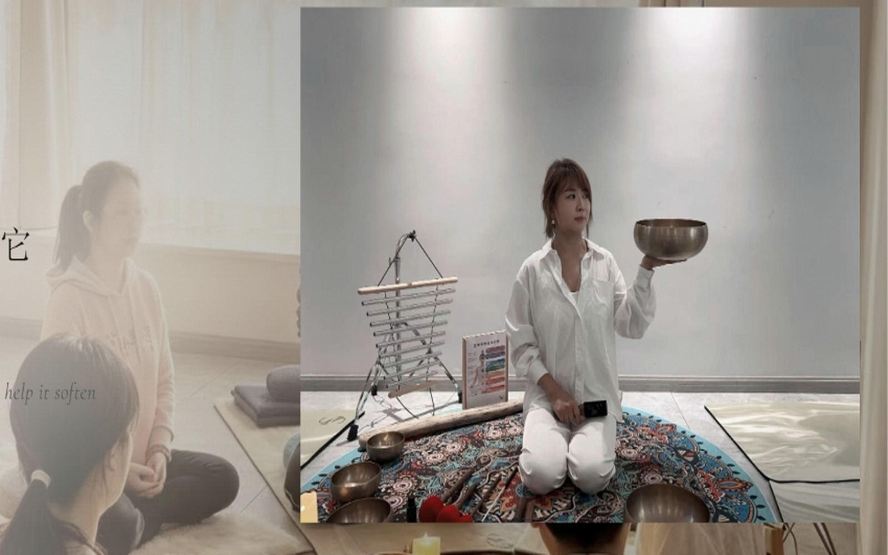
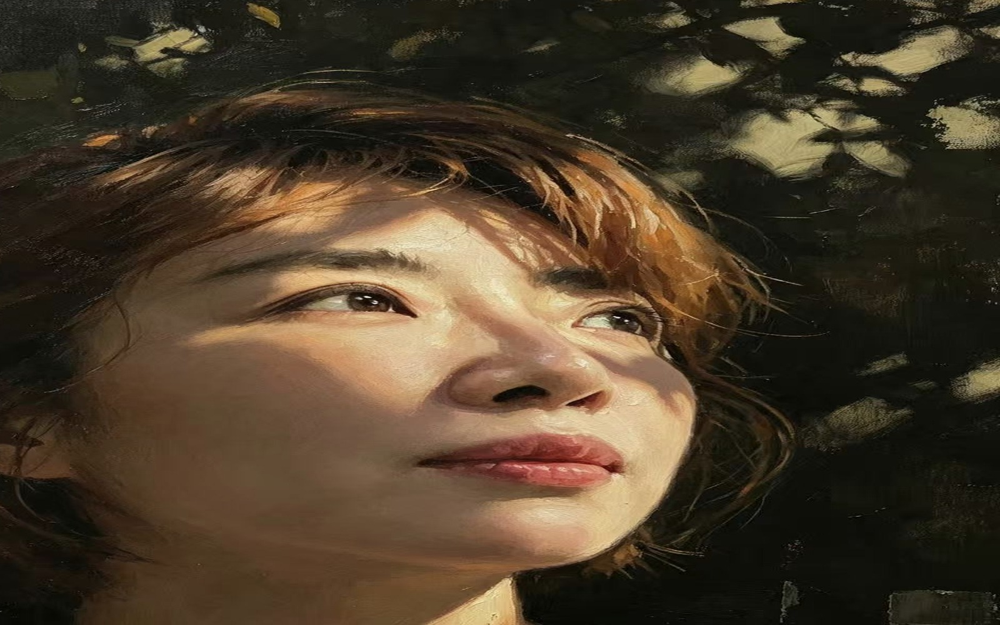
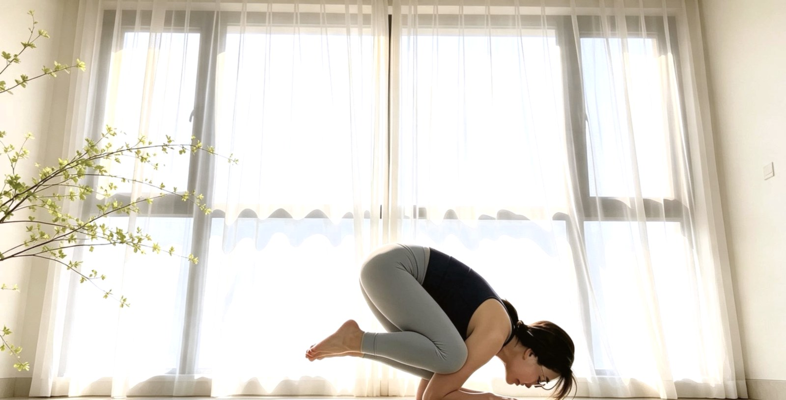
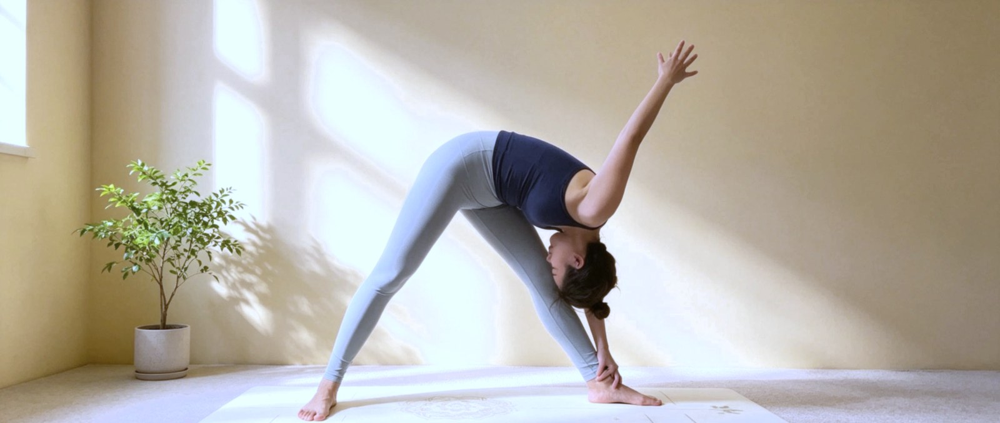
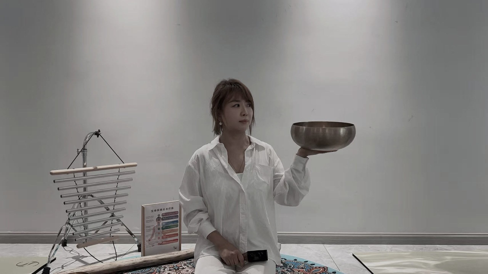

在东方与未来之间 · 听身体的声音
颂钵 · 脉轮 · 瑜伽 · 身心疗愈 · AI 协作
Healing · Learning · Creating
潜意识沟通 8 年 · 颂钵疗愈 3 年 · 瑜伽 1 年 · AI 1 年,正在把自己的成长结晶成可分享的智慧。
The body remembers everything. We simply help it soften again.




你在听别人说话,身体却在替你说。
What your body says when words stop.
呼吸之间,一切都在。
Between breaths, everything is.
不是变得更好,是终于允许自己。
Not becoming better — finally allowing.

Until we meet again.